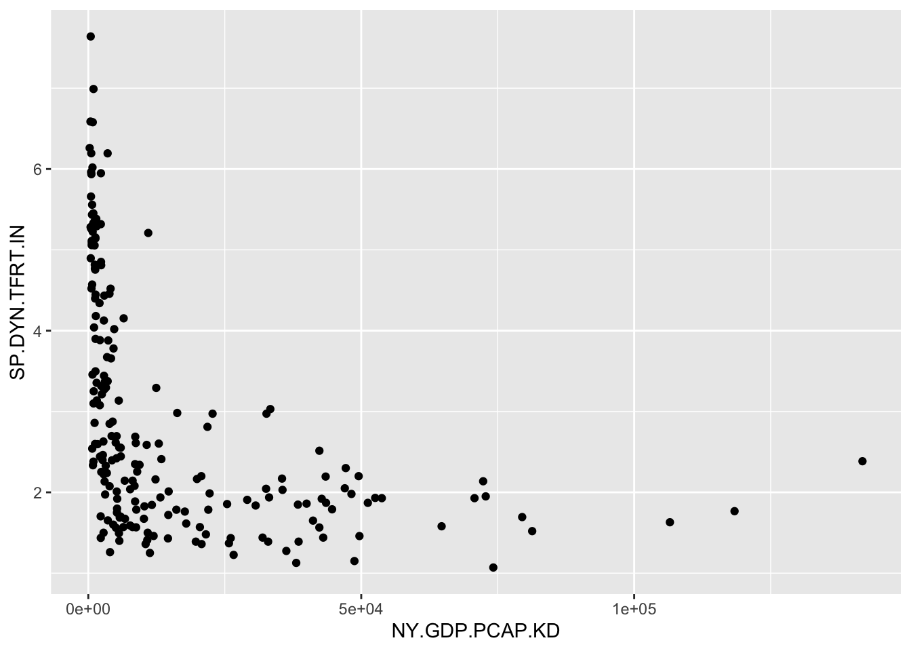
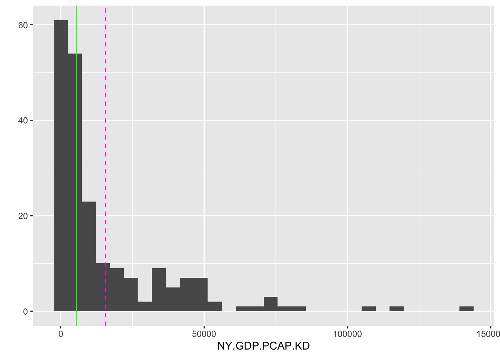
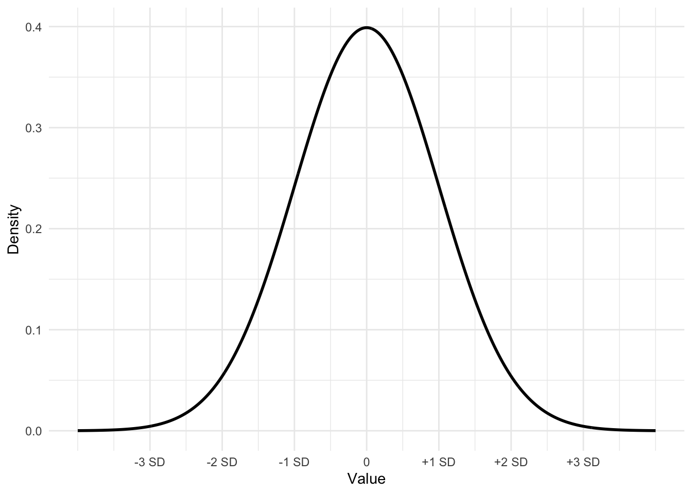
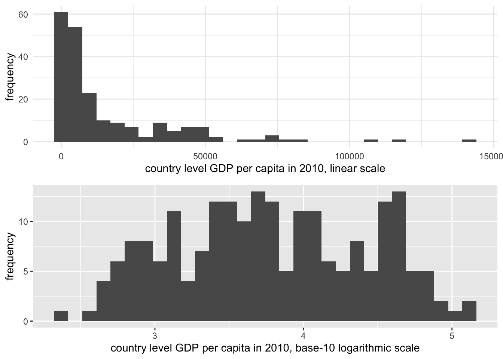
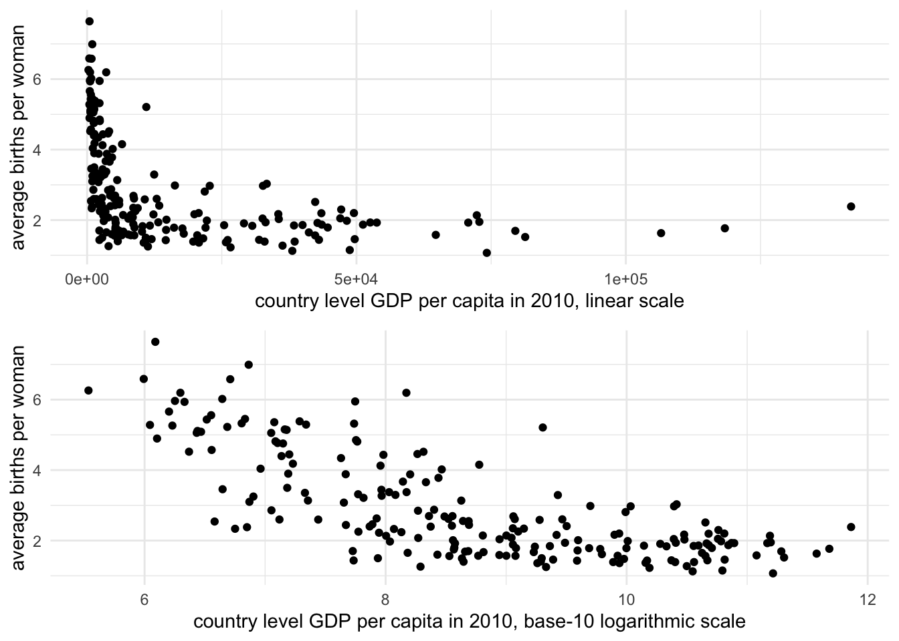

Chapter 3 Importing, Cleaning, and Describing Data
Chapter 3 introduces the organization of rectangular datasets in R, fundamental operations on datasets, along with measurements of, and relationships between, columns in datasets.
Learning objectives and chapter resources
By the end of this chapter you should be able to: (1) organize and differentiate forms of tabular, tidy data tables; (2) use summary and descriptive statistics for central tendency (mean, median, mode) and variability (range, IQR, standard deviation, MAD) to describe data tables given specific levels of measurement; (3) import, export, and merge data tables; (4) construct common measurement scale transformations. The material in the chapter requires the following packages: tidyverse (Wickham 2023b) and WDI (Arel-Bundock 2022), which should already be installed. The material uses the following datasets gdpfert.csv, hdi_2021.csv, vdem_data.csv, and countries_tsxs.csv from https://faculty.gvsu.edu/kilburnw/inpolr.html.
Introduction
In Chapter 3, we will learn about the organization and description of data in a form usually preferred for analysis: a rectangular matrix of rows and columns. This form, with observations on (horizontal) rows and the characteristics of the observations on (vertical) columns, is a standard form in which researchers analyze data. The term “Data” does not refer exclusively to information organized into this format, but typically the analysis of data will involve its representation in this form. Beyond organizing data, we will learn about common summary statistics and measurement scales.
3.1 Rectangular data structure
The process of collecting and organizing data is often the most time consuming in any research project. A common rule of thumb is the ‘80/20 rule’. You should expect to spend about 80 percent of your time cleaning and organizing data to get it into a clean, usable format, and only about 20 percent actually analyzing it (Dasu and Johnson 2003). So, learning how to organize and clean data into an amenable format for analysis is an essential skill.
Table 3.1 displays a tidy (or clean) data table from the World Bank in this structured form. The units of observation are countries, in rows (read horizontally), while the characteristics of each country (gross domestic product per capita, labelled NY.GDP.PCAP.KD and average births per woman, labelled SP.DYN.TFRT.IN). In this example, if the plan were to collect data on economies and fertility rates around the world, a necessary step would be to organize the observations into this tabular form. The rows organize the units of observations, countries, while the columns organize the features, often referred to as variables regardless of how much the features of each country actually vary. Such a dataset, with only a single entry for each cell of the table, would be regarded as a tidy, clean dataset or data table. In the first row of a clean data table, there may or may not be a header row, the first row of the table containing the names of each of the columns. If the table consists of nothing else besides a header row and the entries for each unit of observation (no additional footnotes or additional text explanations below the table), the dataset is also machine readable, meaning it can be imported into R for analysis.
| country | NY.GDP.PCAP.KD | SP.DYN.TFRT.IN |
|---|---|---|
| Andorra | 34667.3 | 1.270 |
| United Arab Emirates | 32534.8 | 1.819 |
| Afghanistan | 526.1 | 5.977 |
| Antigua and Barbuda | 13986.8 | 1.988 |
| Albania | 3577.1 | 1.660 |
| Armenia | 2958.8 | 1.722 |
| Angola | 2994.4 | 6.194 |
| Argentina | 13551.3 | 2.346 |
| American Samoa | 12256.3 | NA |
| Austria | 43334.5 | 1.440 |
In sum a simple clean, tidy, rectangular datafile has the following structure:
Rows (across the horizontal) that record observations on units of analysis. And the data file may also include an additional row — appearing in the position of the first row — containing names of the features.
Columns (down the vertical) that record features of the observations — also referred to as ‘variables’ — measurements of observation characteristics.
And nothing else – no additional notes or explanations of either the rows or columns, appearing anywhere else in the file.
Your goal in analyzing data about politics is nearly always to get the data into tidy form.
Within R, a data table typically exists as a dataframe in an R Workspace. There are different ways to get data tables into an R Workspace. The most common is to import an existing clean data table into R, by applying an R function to an external dataset. Below we will review doing this via the read_csv() function in the tidyverse suite of packages.
3.2 Importing and exporting data tables
The CSV file
A Comma-Separated Value (CSV) is perhaps the most common way of storing a rectangular, clean dataset for future use. Rows organize observations. Columns organize variables (with or without a header row containing variable names). Across each row, for each observation the variables are separated by commas, hence the “Comma” in the name for this data storage format. Files in this format usually carry the “.csv” or “.CSV” file extension, such as the datafile gdpfert.csv. Files of this type are simply plain text files with alpha numeric records of observations and variables.
A CSV datafile can be created with a simple text editor, such as WordPad or Notepad (on Windows) or TextEdit (on a Mac). Any app capable of creating a plain text file (such as a file with the extension .txt) can be used to view, edit, or create a CSV file. Try opening the gdpfert.csv file in a text editor. Adding observations, or even creating datasets, can be accomplished with this method. The key is to make sure that the CSV is clean and tidy — only rows and observations, with a header row containing column names. Each row must have the same number of columns. Of course, some observations might have a missing value for a particular feature, when the measure of that feature is missing for the observation. In those cases, a typical solution is to either use a period symbol (.) or NA for missing values. The data analysis software will either guess, or will need to be instructed, what exactly the missing value indicator is.
Importing, editing, and exporting CSV files
In RStudio, a CSV file appearing in the Files pane can be opened by clicking on it. If the file has the extension .csv, from within the Files pane, click on it and choose view file. Then it can be edited exactly like in the example discussed above. Try opening the file gdpfert.csv in RStudio. Note that a file can be organized as a CSV file but have .txt as the file extension.
In Chapter 1, we used the read_csv() function (part of the tidyverse set of packages), without drawing much attention to it. The function reads the datafile from CSV format and saves it as the object we choose. And it will show us the storage type of the measures that it reads. Try it with gdpfert.csv; set the working directory to the location of the file. Then run the read_csv() function:
The output from the function shows the “Column specification”, the comma delimiter separating observations as well as the storage type of the columns. Three columns were read as text characters “chr”, and seven were imported as numeric “dbl”.
To see the contents of the dataset, enter the name of the data object gdpfert.
## # A tibble: 214 × 13
## iso2c country year NY.GD…¹ SP.DY…² SP.DY…³ iso3c
## <chr> <chr> <dbl> <dbl> <dbl> <dbl> <chr>
## 1 AD Andorra 2019 39414. NA NA AND
## 2 AE United Ar… 2019 43785. 1.33 79.7 ARE
## 3 AF Afghanist… 2019 584. 4.87 63.6 AFG
## 4 AG Antigua a… 2019 17697. 1.47 78.7 ATG
## 5 AL Albania 2019 4543. 1.41 79.3 ALB
## 6 AM Armenia 2019 4562. 1.58 75.4 ARM
## 7 AO Angola 2019 2570. 5.44 62.4 AGO
## 8 AR Argentina 2019 12716. 1.99 77.3 ARG
## 9 AS American … 2019 13288. NA NA ASM
## 10 AT Austria 2019 46647. 1.46 81.9 AUT
## # … with 204 more rows, 6 more variables:
## # region <chr>, capital <chr>, longitude <dbl>,
## # latitude <dbl>, income <chr>, lending <chr>, and
## # abbreviated variable names ¹NY.GDP.PCAP.KD,
## # ²SP.DYN.TFRT.IN, ³SP.DYN.LE00.INThe result is a neatly formatted excerpt of the dataset commented as # A tibble: 214 x 13. The tibble formatting is the result of using the read_csv() function from the tidyverse, explained in Chapter 5.
To write out the gdpfert dataset to an external file, we use write_csv(), specifying the data table (or dataset object) to write out as a CSV file, and then the name of the CSV file we would like to have saved. For example, the line below would write out gdpfert as a CSV file, saving it as gdpfertdata.csv“:
The datafile gdpfertdata.csv appears as a file in the current working directory.
Other datafile formats
Of course, beyond comma-separated, there are many other potential delimiters — a ‘tab’ key delimited ( .tvs ) file is common. Another popular file format is JSON ( .json ), short for Java Script Object Notation . It is a file format commonly used by coders building web applications, and is increasingly used to store data accessible to the public. While JSON-formatted data can be organized into multiple nested sets of observations, for a simple pair of CSV rows, JSON organizes observations into key-value pairs.
Opened in a text file editor, a JSON formatted snippet of the gdpfertdata.csv datafile would appear like this:
[
{
"country": "United States",
"year": 2020,
"gdp_per_capita": 63543,
"fertility_rate": 1.73
},
{
"country": "Canada",
"year": 2020,
"gdp_per_capita": 46292,
"fertility_rate": 1.50
}
]Within the brackets, braces { } separate observations that are neatly labeled by the corresponding column header. In Chapter 6 we will work with JSON-formatted map data — datafiles recording the boundary lines of US Congressional districts, for example. The package jsonlite (Ooms 2014) will read in JSON data. Once the file is read into R as a dataframe, regardless of the format of the existing dataset, you would apply analysis functions to it like any other dataframe.11
Summary measures of data objects
Regardless of the file format, once imported as a data object, basic summary statistics are accessed with the summary() function. We can access summary statistics for the entire gdpfert dataset by entering summary(gdpfert). With large datasets, it’s better to identify a specific variable by name. Individual columns of data can be identified with the $ symbol:
## Min. 1st Qu. Median Mean 3rd Qu. Max.
## 0.918 1.590 2.106 2.585 3.329 6.961
## NA's
## 7We will review the importance of these summary statistics further below. For now, just note that the default output is to report — from left to right — the minimum value, 25th percentile (1st Qu.), median or 50th percentile, arithmetic mean, 75th percentile (3rd Qu.), and maximum value. The summary means, for example, at the minimum one country averages just .918 births per woman, while the average country level rate is 2.585 births per woman. The entry NA's refers to seven countries that are missing fertility rates from the dataset.
Other functions useful for summarizing the contents of dataframes include glimpse(gdpfert):
## Rows: 214
## Columns: 13
## $ iso2c <chr> "AD", "AE", "AF", "AG", "AL", …
## $ country <chr> "Andorra", "United Arab Emirat…
## $ year <dbl> 2019, 2019, 2019, 2019, 2019, …
## $ NY.GDP.PCAP.KD <dbl> 39413.6, 43785.4, 584.4, 17697…
## $ SP.DYN.TFRT.IN <dbl> NA, 1.334, 4.870, 1.468, 1.414…
## $ SP.DYN.LE00.IN <dbl> NA, 79.73, 63.56, 78.69, 79.28…
## $ iso3c <chr> "AND", "ARE", "AFG", "ATG", "A…
## $ region <chr> "Europe & Central Asia", "Midd…
## $ capital <chr> "Andorra la Vella", "Abu Dhabi…
## $ longitude <dbl> 1.522, 54.370, 69.176, -61.846…
## $ latitude <dbl> 42.508, 24.476, 34.523, 17.117…
## $ income <chr> "High income", "High income", …
## $ lending <chr> "Not classified", "Not classif…And to see a snippet of the top and bottom rows of the table, the functions head() and tail() will print these rows. For example, head(gdpfer) will print the top several rows of the table:
## # A tibble: 6 × 13
## iso2c country year NY.GD…¹ SP.DY…² SP.DY…³ iso3c
## <chr> <chr> <dbl> <dbl> <dbl> <dbl> <chr>
## 1 AD Andorra 2019 39414. NA NA AND
## 2 AE United Ara… 2019 43785. 1.33 79.7 ARE
## 3 AF Afghanistan 2019 584. 4.87 63.6 AFG
## 4 AG Antigua an… 2019 17697. 1.47 78.7 ATG
## 5 AL Albania 2019 4543. 1.41 79.3 ALB
## 6 AM Armenia 2019 4562. 1.58 75.4 ARM
## # … with 6 more variables: region <chr>,
## # capital <chr>, longitude <dbl>, latitude <dbl>,
## # income <chr>, lending <chr>, and abbreviated
## # variable names ¹NY.GDP.PCAP.KD, ²SP.DYN.TFRT.IN,
## # ³SP.DYN.LE00.INOf course, the data table can be inspected visually in spreadsheet form with the View() function, which with View(gdpfert) would bring up the spreadsheet view of the data. The use of this function is equivalent to clicking on the spreadsheet icon next to the data in the Environment pane of RStudio.
3.3 Data organization: cross-sectional and time series
Data tables record variation, which can occur in two different directions, cross sectionally (across observations) and time series (across time), or a combination of both. For example, the data tables generated from gdpfert.csv are cross-sectional — each row of the table consists of an observation on countries, with each column recording different characteristics of the countries each at one point in time.
The file countries_tsxs.csv, which varies both across countries and over time, is a cross-sectional time series dataset.
To illustrate the organization of data varying across the two dimensions, use the read_csv() function to read in the datafile to the data object countries_tsxs.
The imported data object, countries_tsxs contains observations of various development characteristics on countries around the world, from 2000 to 2019. The data is both cross sectional and time series — on any one unit of analysis (a country) there are observations on development characteristics over the 20 year period. The first five rows and seven columns of the dataset display the variation across Afghanistan on two development indicators. This portion of the data table is selected with subscripts, bracketed rows and columns [r,c] to select on a dataframe. The rows for entries one through five are selected with 1:5 and one through seven with 1:7:
## # A tibble: 5 × 7
## country region iso2c iso3c year gdp_c…¹ gdp_g…²
## <chr> <chr> <chr> <chr> <dbl> <dbl> <dbl>
## 1 Afghanistan South … AF AFG 2003 8.22e 9 8.83
## 2 Afghanistan South … AF AFG 2014 1.97e10 2.72
## 3 Afghanistan South … AF AFG 2007 1.11e10 13.8
## 4 Afghanistan South … AF AFG 2013 1.92e10 5.60
## 5 Afghanistan South … AF AFG 2017 2.10e10 2.65
## # … with abbreviated variable names ¹gdp_constant,
## # ²gdp_growthA time series data table contains measurements over time on a single unit of observation. Quite simply, an example of a time series component of countries_tsxs could be illustrated by simply subsetting it on a single development indicator on a single country, such as the observations on gdp_growth and gdp_pc_constant on Afghanistan. Using row and column subscripts to select only columns recording the year and those two indicators c(5, 7, 8, 9) on the first 20 rows 1:20 of the dataset:
## # A tibble: 20 × 4
## year gdp_growth gdp_constant_int_pp gdp_pc_constant
## <dbl> <dbl> <dbl> <dbl>
## 1 2003 8.83 29265058689. 363.
## 2 2014 2.72 70158264545. 603.
## 3 2007 13.8 39589169630. 429.
## 4 2013 5.60 68297470349. 608.
## 5 2017 2.65 74711922906. 589.
## 6 2010 14.4 57116893447. 569.
## 7 2016 2.26 72785293848. 590.
## 8 2004 1.41 29678901146. 354.
## 9 2012 12.8 64675178731. 596.
## 10 2001 NA NA NA
## 11 2000 NA NA NA
## 12 2011 0.426 57360414055. 551.
## 13 2002 NA 26890054382. 360.
## 14 2005 11.2 33011757108. 380.
## 15 2019 3.91 78557606649. 584.
## 16 2008 3.92 41143038133. 437.
## 17 2006 5.36 34780330056. 384.
## 18 2018 1.19 75600418109. 579.
## 19 2015 1.45 71176481723. 592.
## 20 2009 21.4 49943751387. 512.Implicit in the organization of the data is that it refers to a single country, Afghanistan, which is not recorded explicitly anywhere within it. Adding any additional country observations would introduce cross-sectional variation, turning it back to being a cross-sectional time series dataset.
3.4 Data measurement levels and storage types
The measures, or columns of a data table can be categorized into different groups: qualitative and quantitative. These terms do not have a precise definition. Typically, the term “qualitative measure” refers to a variable that records a set of categories without an inherent numerical measure. For example, party identification “Are you a Democrat, Republican, Independent, or what?” is a qualitative measure. Another example is a survey question asking, “How many of the people running the government are corrupt?”, where responses are recorded on a scale including categories such as “All”, “Most”, “About half”, “A few”, and “None”. A quantitative measure typically refers to broadly a meaningful numerical score. A measure of GDP per capita measured in US dollars, a percentage or a count of votes cast, would be quantitative measures. Quantitative measures are often further described as discrete (a count of votes — integers) or continuous (a measure of GDP per capita — in theory any real number). The characteristics of these measures can be further refined into four levels of measurement, which matter for determining appropriate summary statistics applied to each one.
Measurement as categorical, ordinal, interval or ratio
A fundamental measurement distinction is between nominal, ordinal, interval, or ratio. In a data table, any variable can be described by one of these terms, either due to the inherent qualities of the measure or assumptions about it.
Nominal measures are variables with distinct categories without an underlying order. For example, in a survey, a measure of religious identity (“Buddhist, Christian, Hindu, Jewish, or Muslim?”) is nominal. A nominal measure is qualitative, and can be summarized with a mode (the most frequent category). While it would not make sense to ask what the average religious identity is, it would make sense to tally up the most common identity.
Ordinal measures are ordered categories reflecting an underlying rank quantity. For example, a Likert scale in survey research in which respondents indicate their level of agreement on a five-point scale ranging from “Strongly Disagree” to “Strongly Agree” is an ordinal scale. An ordinal measure could be interpreted as qualitative or quantitative. There is no inherent numerical quality to differentiate “Strongly Disagree” from “Disagree”, only a rank order of stronger disagreement. An ordinal measure can be summarized by a median or mode. Yet as explained further below, ordinal measures are often treated as quantitative, interval measures in which the categories as assigned numerical scores, such as a 1 for “Strongly Disagree” and 2 for “Strongly Agree” and so on. Only with this added assumption of equal difference (from 2 to 1) between categories could an ordinal scale convert into an interval measure.
Interval and ratio measures are inherently quantitative. With the assumption of equal intervals between measured points, a survey question asking individuals how strongly they identify as Democrats or Republicans on a seven-point scale ranging from 1 for “Strong Democrat” through “Independent” to 7 for “Strong Republican” would be an interval scale. A ratio measure is a meaningful zero indicating the absence of a quantity. For example, a measure of percentage change in Gross Domestic Product (GDP) includes a meaningful zero point and is ratio in scale. Vote counts are ratio. The term “ratio” references the fact that because there is a meaningful zero, quantities can be compared in ratio form – such as one candidate receiving twice as many votes as another. For interval and ratio measures, summary statistics of a mode, median, and a mean are appropriate.
Storage types in R: numeric, factor, character
In R levels of measurement roughly correspond to different storage types in dataframes. The three primary types of storage you will encounter are “numeric”, “character”, and “factor”. Each type has its own unique characteristics and uses.
The function str() will reveal the storage type of a each column in a dataframe, such as str(gdpfert). When reading in an external CSV file with read_csv(), you will generally find that the storage types are either numeric or character. For example, in the str(gdpfert) output the three-letter code chr refers to character storage for the variables iso2c and country.
A character data type stores text strings, such as the names of countries. Counterintuitively, character storage types can also include numbers. Typically character storage types are reserved for text-heavy data without an inherent order or any quantitative measurement quality. Nonetheless, it is often better to have text-heavy data stored as a “factor” storage type when text values are repeated frequently. Factor storage types are explained after numeric types:
Most of the columns in gdpfert are of course numeric and store numbers. Numbers can be either integers or decimals. What is important to recognize is that for any data analysis, numeric types are required. Even if a column of numbers appears as if it is numeric, for various reasons it could be stored as a character set. For example, the functions to convert columns of data between numeric and character are as.numeric() and as.character(), although these should be used with caution as the results may not always be as intended.
To illustrate the differences, we could create a (nonsensical) character version of GDP per capita:
It appears at the end of the dataset. (Try names(gdpfert).) We can compare the storage types and data entries to observe how differently the character and numeric versions are treated, viewing the first four observations on these two variables:
## tibble [4 x 2] (S3: tbl_df/tbl/data.frame)
## $ NY.GDP.PCAP.KD: num [1:4] 39414 43785 584 17697
## $ gdp_character : chr [1:4] "39413.6344732996" "43785.4172694435" ## # A tibble: 4 × 2
## NY.GDP.PCAP.KD gdp_character
## <dbl> <chr>
## 1 39414. 39413.6344732996
## 2 43785. 43785.4172694435
## 3 584. 584.386882896106
## 4 17697. 17697.2311549703The numeric version by default does not print out decimal places, athough these values are stored within the variable. The character version may appear to be more precise with five decimal places represented in the dataframe snippet. But applying the summary() function displays a problem:
## Min. 1st Qu. Median Mean 3rd Qu. Max.
## 270 2431 6430 16840 20140 191194
## NA's
## 12## Length Class Mode
## 214 character characterAs a character storage type, R is unable to calculate any summary statistics as expected. So interval or ratio scaled measures should be stored as numeric types. Nominal and ordinal measures could be stored as characters or a third type of storage, “factor”.
A factor is a hybrid of character and numeric, combining numeric scores and verbal labels. A factor has numeric scores associated with verbal labels. For example, country names may be stored numerically within a dataset, but R indexes the countries to a set of verbal labels associated with each country score. Factors are preferred over characters for ordinal data because the label still facilitates data analysis. For example, you can easily calculate the frequency of each category or use factors in R functions that require categorical (not continuous) input.
We create a new variable region_factor with the function as.factor():
Then observe the storage type:
## Factor w/ 7 levels "East Asia & Pacific",..: 2 4 6 3 2 2 7 3 1 2 ...Notice in the storage type in str() there are seven levels or labels of the factor that are associated with numeric placeholders from 1 through 7.
## Length Class Mode
## 214 character character## East Asia & Pacific Europe & Central Asia
## 36 56
## Latin America & Caribbean Middle East & North Africa
## 42 21
## North America South Asia
## 3 8
## Sub-Saharan Africa
## 48The summary function as applied to a factor allows a tabulation of frequencies.
3.5 Constructing and merging data tables
To practice running R functions and applying some basic principles of organizing data tables, we will download and construct a data table from the World Bank. Then we will merge it with country level data on quality of democracy. We will use functions from the tidyverse set of packages and download World Bank data with the WDI package, which was introduced in Chapter 2 but will need to be installed if not already (install.packages('WDI', repos='http://cran.us.r-project.org').
The tidyverse package is already attached from earlier parts of Chapter 3. We will attach the WDI package:
We are constructing the data table from scratch, downloading data directly from the World Bank. We first need to find the indicators (variables) that interest us.
We will first search for data using the WDIsearch() function. We search on a specific key term, which depending on the function argument could be the World Bank’s descriptive label for the indicator, the alphanumeric abbreviation such as NY.GDP.PCAP.KD for GDP per capita. The descriptive label for the World Bank’s data is called the “name”, while the “indicator” is the World Bank’s term for the alphanumeric identifier of the measure.The default is to search the verbal label. We will search for any measures mentioning fertility:
## indicator
## 17316 SP.DYN.TFRT.IN
## 17317 SP.DYN.TFRT.Q1
## 17318 SP.DYN.TFRT.Q2
## name
## 17316 Fertility rate, total (births per woman)
## 17317 Total fertility rate (TFR) (births per woman): Q1 (lowest)
## 17318 Total fertility rate (TFR) (births per woman): Q2In this text the output is abbreviated to save space. In your console the result is a list of all the indicators that include “fertility” in the name. Each separate row is an indicator, a separate measure. There are various fertility-related metrics available; some appear identical in subject matter, perhaps only differing by source data. Indicators 17316 and 17315 both record a total fertility rate. We will download data after searching for a few other measures; the WDIsearch() function searches the database, but does not download observations on countries.
Try searching for GDP per capita, WDIsearch(string="GDP per capita"). Then try searching for “life expectancy” (string="life expectancy") and “income”. Note that for general measures or subject matter at the core of the World Bank’s business, such as GDP, the result can be several hundred indicators.
We will download data on GDP per capita and fertility. The function WDI() downloads the data. The required arguments are a list of countries ("all" for all countries) and a list of indicators, as well as a start year and end year. For a cross-sectional dataset, the start= and end= arguments are the same. In this case, we will download the data for the year 2010 and save it as the data object wbdata1. The data are downloaded and stored through the assignment operator <- as data object wbdata1.
wbdata1<-WDI(country="all", indicator=c("NY.GDP.PCAP.KD",
"SP.DYN.TFRT.IN"), start=2010, end=2010, extra=TRUE)Inspect the first few lines of data by entering head(wbdata1). The dataset includes regional aggregate statistics. For a dataset intended to comprise of country-level observations, these regional aggregates should be excluded. We use the subset() function to remove aggregate totals Arab world, East Asia, etc. We subset the data by the condition region!="Aggregates" as the subsetting criterion. The symbol != means “not equal to”. So we instruct RStudio to subset the data, keeping all rows of the data that are not Aggregates.
The subsetted data is overwritten on the existing data object wbdata1. Try typing the name of the object to observe that it now no longer includes the regional aggregates.
We can create a neat presentation table with a function from the knitr package (Xie 2023b) that powers RMarkdown, kable() (as in ‘table’ but with a k). The main argument to kable() is the name of a dataframe. While the function will produce table output in the Console window, the main purpose of it is to generate tables in RMarkdown that are knitted to PDF or Word format. Try running kable(wbdata1) and a large unwieldy table will scroll through the Console.
If, for example, we wished to print a table consisting of the country name, GDP and fertility rate, we could subscript the dataframe to include just these three columns, which occur in column positions 1, 7, and 8: kable(wbdata1[, c(1,7,8)]). And to limit the number of observations, we will select just the first ten rows: kable(wbdata1[1:10, c(1,7,8)]).
Adding caption= yields Table 3.2:
kable(wbdata1[1:10, c(1,7,8)], caption="Table of National GDP per capita
and fertility rate in 2010, created with the kable() function.")| country | NY.GDP.PCAP.KD | SP.DYN.TFRT.IN | |
|---|---|---|---|
| 1 | Afghanistan | 542.9 | 6.195 |
| 4 | Albania | 3579.8 | 1.653 |
| 5 | Algeria | 4456.6 | 2.875 |
| 6 | American Samoa | 12446.3 | 3.292 |
| 7 | Andorra | 36277.3 | 1.275 |
| 8 | Angola | 3540.8 | 6.194 |
| 9 | Antigua and Barbuda | 16135.4 | 1.785 |
| 11 | Argentina | 13387.2 | 2.411 |
| 12 | Armenia | 2796.1 | 1.500 |
| 13 | Aruba | 25429.2 | 1.855 |
Note that when using the function in an RMarkdown document, you will need to call up the function from the knitr package with knitr::, as in knitr::kable(wbdata1[1:10, c(1,7,8)]), or attach the knitr package with library(knitr) prior to using the function. If knitting directly to PDF instead of Word, the argument booktabs=TRUE adds additional formatting lines.
A simple way to make a quick scatterplot is with qplot(), a function from the tidyverse suite of packages. Enter the name of the X and Y variables, and identify the dataset. The result is Figure 3.1:

FIGURE 3.1: Scatterplot of country-level fertility rate (births per woman) by GDP per capita (constant 2010 USD). GDP per capita is right-skewed, with most countries clustered at lower values and a few outliers at high levels. This skew compresses the majority of observations along the X-axis, making it difficult to discern the relationship between GDP and fertility.
The function picks a plot type given the measurement qualities of the input data; in this case it produces a scatterplot since the two measures are stored as numeric. We have constructed a tidy data table and created a visualization based on two of the measures. Next we will combine data from multiple data tables.
Merging data tables
Researchers often need to combine data from multiple sources, for example where different data tables hold different indicators or measurements on units of interest. Many different research programs collect international-level data, releasing extensive tables containing multiple political, economic, and social conditions of countries around the world. Yet despite the comprehensiveness of different sources, it may be necessary to merge together the sources.
For example, in a country-level dataset one source contains various measures of public health, while another contains measures of the quality of democracy, and the challenge is to combine the two data tables into one. If the units of observation in each data table match exactly and are few in number, a merge is feasible with a simple spreadsheet. Even when merging one to one, where each row from one table matches up exactly with a row from another table, cut-and-paste manipulation of a spreadsheet is error prone. And once the units differ slightly from table to table, or cover multiple years, such a merge quickly becomes unwieldy and requires the use of a merge function in code.
Merges are performed pairwise — two tables are compared at a time. And before beginning, start the merge with the end product in mind. For example, will the merged dataset be created as a new data table, one that contains only rows in common between the two tables? Or will the rows of the merged dataset contain all rows of one table, combined with any matching rows from another? Or perhaps are there many rows from one table to match with single rows from another table, a so-called “many to one” match?
After thinking ahead to the type of merge, the next step is to identify how the tables will be merged. It requires a “key” field (a column or set of columns in the data table) that uniquely identifies each row — each unit of observation. For example, in merging two data tables collected at the country level, the key field could be the name of each country, but if the data tables included multiple years of observations, then the key field would be the country name and year. (In the language of databases, the key field in the main table is the “primary” key, while in a second table – to merge on to the main table – the key is referred to as a “foreign” key. See Wickham and Grolemund (2016) for a further explanation.)
As an example, we will work with a small subset of the Varieties of Democracy (Vdemorganization2022?) core dataset (Coppedge et al. 2022), two indicators, measures of polyarchy and liberal democracy. And we will merge these country-level indicators with a data table containing the United Nations Development Programme’s Human Development Indicators (HDI) index (2022)12.
We will construct a data table containing only the rows (observations) that match within each source table; we will see that this type of merge reduces the total number of countries included within the data, to the subset of countries found within both tables. Then we will compare this table to a merge that preserves the country rows from either table.
An excerpt from the Varieties of Democracy data is the file vdem_data.csv. So we first read in the excerpted data with the read_csv() function from the tidyverse package:
And we can see it consists of 179 rows and four columns:
## # A tibble: 179 × 4
## country_name country_text_id v2x_libdem v2x_polyar…¹
## <chr> <chr> <dbl> <dbl>
## 1 Afghanistan AFG 0.021 0.16
## 2 Albania ALB 0.403 0.478
## 3 Algeria DZA 0.145 0.284
## 4 Angola AGO 0.19 0.351
## 5 Argentina ARG 0.658 0.819
## 6 Armenia ARM 0.556 0.739
## 7 Australia AUS 0.808 0.854
## 8 Austria AUT 0.749 0.825
## 9 Azerbaijan AZE 0.068 0.194
## 10 Bahrain BHR 0.052 0.122
## # … with 169 more rows, and abbreviated variable name
## # ¹v2x_polyarchyWe are merging it with the HDI, in the comma-separated value file hdi_2021.csv. Read in the HDI data to see what might potentially be a matching key field for vdem_data:
Then the HDI file consists of 191 columns and six rows:
## # A tibble: 191 × 6
## Country hdi life_…¹ expec…² mean_…³ gni_pc
## <chr> <dbl> <dbl> <dbl> <dbl> <dbl>
## 1 Afghanistan 0.478 62 10.3 3 1824
## 2 Albania 0.796 76.5 14.4 11.3 14131
## 3 Algeria 0.745 76.4 14.6 8.1 10800
## 4 Andorra 0.858 80.4 13.3 10.6 51167
## 5 Angola 0.586 61.6 12.2 5.4 5466
## 6 Antigua and Ba… 0.788 78.5 14.2 9.3 16792
## 7 Argentina 0.842 75.4 17.9 11.1 20925
## 8 Armenia 0.759 72 13.1 11.3 13158
## 9 Australia 0.951 84.5 21.1 12.7 49238
## 10 Austria 0.916 81.6 16 12.3 53619
## # … with 181 more rows, and abbreviated variable names
## # ¹life_expect, ²expect_school, ³mean_schoolCombining rows of two tables
The process of merging begins with identifying the key fields. In the hdi_2021 dataframe, the only possibility is “Country”. The vdem_data frame includes both a three character abbreviation and “country_name”. The starting point for merging the files is to find matches (and the observations that do not match) in comparing “Country” to “country_name”. For the functions to find the matching exact rows within the key fields, the country names have to be exact matches in capitalization, spacing, and use of any additional characters such as parentheses or slash marks. So, for example, in an exact match “Vietnam” would not be identified as matching “Viet Nam”.
Before merging the files together, it is often useful to first inspect which rows (countries) are not matched.
This detection works in two directions:
- from the VDEM data to find countries not present in the HDI data; and
- from the HDI data to find countries not present in the VDEM data.
To find the rows that do not match, we use the anti_join() function from the tidyverse package. Like other join functions from the package, the anti_join() function requires three arguments, two dataframes and the key field, anti_join(DATAFRAME1,DATAFRAME2, KEY_FIELD). The function will identify all rows in DATAFRAME1 that are missing from DATAFRAME2. For example, to identify the rows from DATAFRAME1 that do not match, we enter the names of the datasets to compare, then a by=c("KEY_FIELD1" = "KEY_FIELD2") to identify the names of the key fields that should be compared for matches. If the names of the key fields were the same across the two datasets, the identification of the key field would be by="KEY_FIELD". In this example, the anti_join() function specifies the two dataframes, vdem_data, hdi_2021, followed by the key fields corresponding to the dataframes in order, by=c("country_name" = "Country")).
Let’s see how many mismatches are identified:
## # A tibble: 8 × 4
## country_name country_text_id v2x_lib…¹ v2x_p…²
## <chr> <chr> <dbl> <dbl>
## 1 Kosovo XKX 0.421 0.601
## 2 North Korea PRK 0.015 0.085
## 3 Palestine/Gaza PSG 0.06 0.134
## 4 Palestine/West Bank PSE 0.143 0.253
## 5 Somalia SOM 0.093 0.163
## 6 Somaliland SML 0.259 0.413
## 7 Taiwan TWN 0.699 0.813
## 8 Zanzibar ZZB 0.198 0.263
## # … with abbreviated variable names ¹v2x_libdem,
## # ²v2x_polyarchyThe tables shows the eight rows — eight countries — of the VDEM dataset that do not match any rows in the HDI dataset. To find the reverse, the countries in the HDI dataset that do not appear in the VDEM dataset reverse the order of the datasets and key fields : anti_join(hdi_2021, vdem_data, by=c("Country"="country_name")). Try running this reversed anti_join() function to observe how many countries are not matched in vdem_data from hdi_2021.
From the anti_join() function, it’s clear that the intersection of the two datasets, the matching country observations, will be fewer than either single dataset. To find the intersection of the two datasets, we use the inner_join() function. The function is symmetric with respect to which observations (rows) are selected, so in that sense it does not matter which dataset is specified first in the function:
## # A tibble: 171 × 9
## Country hdi life_…¹ expec…² mean_…³ gni_pc count…⁴
## <chr> <dbl> <dbl> <dbl> <dbl> <dbl> <chr>
## 1 Afghan… 0.478 62 10.3 3 1824 AFG
## 2 Albania 0.796 76.5 14.4 11.3 14131 ALB
## 3 Algeria 0.745 76.4 14.6 8.1 10800 DZA
## 4 Angola 0.586 61.6 12.2 5.4 5466 AGO
## 5 Argent… 0.842 75.4 17.9 11.1 20925 ARG
## 6 Armenia 0.759 72 13.1 11.3 13158 ARM
## 7 Austra… 0.951 84.5 21.1 12.7 49238 AUS
## 8 Austria 0.916 81.6 16 12.3 53619 AUT
## 9 Azerba… 0.745 69.4 13.5 10.5 14257 AZE
## 10 Bahrain 0.875 78.8 16.3 11 39497 BHR
## # … with 161 more rows, 2 more variables:
## # v2x_libdem <dbl>, v2x_polyarchy <dbl>, and
## # abbreviated variable names ¹life_expect,
## # ²expect_school, ³mean_school, ⁴country_text_idThe results show the 171 matching rows from each dataset, with columns from hdi_2021 first followed by vdem_data. The functions for these joins find the respective rows, but do not automatically save the results into a new dataframe. The new dataframe must be specified with an object name and the assignment operator. To name the merged data hdi_vdem:
The order of the columns in the new dataset appears in the order specified in the function, hdi_2021, followed by vdem_data, including the column “country_text_id” from vdem_data, but only the key field from hdi_2021.
Merging columns on an existing table
While inner_join() finds the intersecting observations, other functions add any matching observations onto an existing dataset — to preserve all row observations within the existing table.
A left_join() of hdi_2021, vdem_data, starts at the data on the left-hand side, hdi_2021:
The function adds countries from vdem_data to hdi_2021 — keeping all rows of hdi_2021.
Notice that the row entries for the two democracy indicators of vdem_data include a few missing values, <NA> entries, for the countries in the HDI data not included in it.
This left_join() would be useful to merge any additional datasets onto the hdi_2021 dataset. For example,
would replace the existing hdi_2021 with the left_join() version. A complementary function, right_join() would keep observations in vdem_data and add rows to it from hdi_2021.
For most purposes, these inner, left and right joins are sufficient. For a more detailed discussion of different types of data merges, see Wickham and Grolemund (2016). Note that for data tables in which the units of observation in rows within two tables match each other exactly in their row order, the function cbind() appends one dataset onto another by adding columns; hence “c” is for “column”. (To append rows to a table, in which the order of the columns match exactly, the row bind, or rbind() will add rows.)
3.6 Measurement characteristics: center and spread
Given a clean data table, summary statistics are the starting point for a data analysis. While fundamental, the statistics provide insight into a typical (‘average’ value) or by how much the measures vary. With the two measures from the assembled World Bank dataframe wbdata1, such statistics could help answer questions such as, “What is the typical fertility rate globally or in regions?” and “How much does fertility vary within those regions?” To be clear, we will define these measures and review functions for calculating each one.
Mean, median, and mode
We have already seen the mean from summary() applied to a numeric variable. The arithmetic mean (the “average”) is the most commonly used measure of central tendency. Given a quantitative numeric measure, interval or ratio in scale (such as a country’s life expectancy), represented by \(x\), on a total of \(n\) different units of observation: \(x_1, x_2, x_3,...,x_n\), the mean is calculated as
\[\bar{x} = \frac{x_1 + x_2 + x_3+...+x_n}{n}=\frac{1}{n} \sum_{i=1}^{n} x_i\]
where \(\bar{x}\) is the mean, \(n\) is the number of values or units of observation, and \(x_i\) is the \(i^{th}\) observation value.
Beyond the summary() function, the mean() function will calculate a mean, but it requires an argument you will see repeatedly when working with election survey data, na.rm=TRUE, which ensures that missing values are dropped from the calculation. mean(wbdata1$NY.GDP.PCAP.KD, na.rm = TRUE). (The default in summary() is to drop missing observations.)
The median is another measure of central tendency, but one that is less sensitive to highly unusual observations such as high GDP countries, the observations often referred to as “outliers”. Like the mean, in R the summary() function reports the median, as does median() with na.rm=TRUE() as needed. The median accounts for the middle position within a set of (\(n\)) observations that are ordered from lowest to highest (or the reverse), separating the lower half of the data from the upper half. The median is also the 50th percentile. Conceptually, the median is simply the middle value if the number of observations is odd in total number, and if even, the median is the average of the two middle values. The median is a positional measure of central tendency; it only accounts for the order of the observations, not the values of the observations like the mean. A graph displaying the mean and median of GDP per capita is shown in Figure 3.2.

FIGURE 3.2: Histogram of country-level GDP per capita (constant 2010 USD) for 2010. The dashed vertical line marks the mean (14,947 USD), while the solid vertical line marks the median (5,206 USD). The large gap between the mean and median reflects the right-skewed distribution of GDP per capita, where a small number of wealthy countries pull the mean far above the median.
The mean and median are graphed as lines intersecting the X-axis by adding an additional layer separated by a + symbol, drawn with geom_vline(). Most countries fall below the mean level of 15,538 USD, but the skewed distribution of GDP per capita — with some countries having much larger economies than the rest of the world — is pulling higher than the median. The median level 5,417 USD is less than half the mean, showing that half of the countries have a GDP per capita at or less than this value.
One last measure of central tendency is the mode. The mode is simply the most frequent observational value. For a continuous, ratio-level measure such as GDP per capita, the modal value is not very illuminating. But for a nominal (versus ordinal or interval/ratio) measure, it is the only appropriate measure of central tendency.
Different measures of central tendency are appropriate for different levels of measurement. For a continuous, interval or ratio level, measure, the mean, median, and mode are all valid summary statistics. For highly skewed measures, such as GDP per capita, the median is often preferred over the mean, since it accounts for the order of observations, not the numeric values. In the absence of skew, the mean may be preferable. A mode is unlikely to provide much insight, given that the range of values is so great that a mode will be proportionally a tiny fraction of the different observations. For ordinal measures, a median or mode is appropriate. It is not uncommon to see ordinal measures treated as interval, and a mean calculated. In the absence of an assumption about interval scaling, the median is appropriate. With nominal measures, only the mode is an appropriate measure of central tendency, since the observations cannot be ordered on the measure.
Interquartile range
The interquartile range (IQR) encompasses both data centrality and dispersion. It, too, is reported through the summary() function applied to numeric measures. It represents the range within which the central 50% of the data values fall. The IQR is calculated as the difference between the 75th percentile (Q3) and the 25th percentile (Q1).
## Min. 1st Qu. Median Mean 3rd Qu. Max.
## 253 2142 5442 15588 20740 141815
## NA's
## 7Percentiles (and the nearly identical “quantile”) divide a numeric variable into groups (counts of observations) of equal size, providing insight into the relative position of a value compared to the rest of the variable. The summary() function divides a variable into quartiles, marked by the 25th, 50th, and 75th percentiles.
The quantile() function will calculate quantiles with an input argument of specific values to create. By default, it calculates quartiles. For example, to find three equal-sized groups of observations: quantile(wbdata1$NY.GDP.PCAP.KD, c(0,1/3,2/3, 1), na.rm=TRUE). In the argument c(0,1/3,2/3, 1) the second entry 1/3 is evaluated as close to .3333. Or specifying ten equal groups (deciles) would require the argument c(0,.1,.2,.3,.4,.5,.6,.7,.8,.9,1). Thus the IQR is a calculation built from quartiles.
The IQR encompasses both data centrality and dispersion. It is reported through the summary() function applied to numeric measures and represents the range within which the central 50 percent of the data values fall. The IQR is calculated as the difference between the 75th percentile (Q3) and the 25th percentile (Q1). A quantile of .50 corresponds to the 50th percentile, the only difference being the scale. The 50th percentile for GDP tells us that at the value of 5,417 USD marks the midpoint in the distribution of GDP per capita around the world. The 0.25 quantile of 2,116 USD (Q1 or 1st Qu.) marks the point below which 25 percent of the data fall, while the .75 quantile 20,641 USD (Q3 or 3rd Qu.) marks the point below which 75 percent of the data fall. This division of the data into four groups (quartiles) of equal size — the 25th, 50th, and 75th quantile — yields the IQR, the difference between Q3 and Q1.
IQR = (20641 - 2116) = 18525
There is an IQR() function in R, but of course it can be easily gleaned from the summary(). The IQR provides a measure of the spread of the middle half of the data, one which is less sensitive to extreme values (outliers) than other measures of data spread reviewed further below. Thus the IQR is especially useful in understanding the variability in skewed distributions or datasets with outliers. In the case of GDP, the IQR range of 18,528 USD shows us that fully half of the countries fall within the range of the IQR of 2,116 to 20,641. Comparing the width to the minimum and maximum shows how skewed the distribution is, with typical countries falling relatively much lower on the scale compared to the maximum.
Measuring spread
While average values are important to investigate, another characteristic is the spread – how dispersed or spread out from the average is a measure? For example, two countries could have similar average or arithmetic mean income levels, but strongly differ by the degree of income inequality, a difference that would be measured in spread or dispersion.
Range is the simplest measure, the difference between the largest and smallest value on a set of measurements. The range is useful for comparing overall variation across a measure, and of course is easily observable from the summary() function. The Min. and Max. output correspond to the 0th percentile and 100th percentile, respectively. The range of 141,815-290 USD, or 141,525 USD, relative to the median value of 5,417 USD reveals the highly skewed distribution of GDP per capita.
The median absolute deviation (MAD) is a measure of disperson relative to the median. The measure is constructed from ‘absolute’ deviations of each observation from the median, the absolute difference between each observation and the median of the distribution. Then the median — of the absolute deviations — summarizes the spread. Formulaically, the MAD is as follows:
\[ \text{MAD} = \text{median}(|x_i - \text{median}(x)|) \]
where \(x_i\) is an observation on a variable and \(median(x)\) represents the median of the variable \(x\). Then \(\text{median}(|x_i - \text{median}(x)|\) calculates the absolute deviation of each observation from the median. Like the median itself, as a measure of dispersion the MAD is less sensitive to outliers.
The function for calculating a MAD is the MAD() function:
## [1] 4506Note that by default, the mad() function in R ‘scales up’ the MAD to make it comparable to the standard deviation, a dispersion measure discussed below. Adding the argument constant = 1 calculates the raw MAD as in the formula. The argument na.rm=TRUE removes missing values from the calculation.
The standard deviation
By far, the two most common and important measures of dispersion are the standard deviation and its related quantity, the variance. Both measures capture spread relative to the mean. Let’s break down conceptually the “deviation” and the “standard”. The “deviation” refers to the difference between an observation, \(x_i\) and the distribution mean \(\bar{x}\). Some observations will be above the mean and others below it, of course, and by definition of the mean the sum of the deviations \(\sum_{i=1}^n (x_i - \bar{x})\) must equal zero. So to sum up the total deviations, the standard deviation measures the squares of the deviations, \(\sum_{i=1}^n (x_i - \bar{x})^2\). This quantity is also known as a sum of squares, which we will return to in later chapters. The ‘squared’ units of this metric is known as the variance, discussed below. By taking the square root \(\sqrt{ \sum_{i=1}^n (x_i - \bar{x}) ^2}\) the quantity is converted back into its original unit of measurement. Finally, by averaging out this total over the total number of observations, \(n\), the standard deviation measures an average distance of each observation from the mean, a measure of population-level standard deviation. For a sample of \(n\) observations, the divisor in the sample standard deviation is \(n-1\). The sample standard deviation \(sd\) is:
\[sd = \sqrt{\frac{\sum_{i=1}^n (x_i - \bar{x})^2}{n-1} }\]
The sample standard deviation and variance are divided by n-1 instead of n (as an average) to correct for bias in the use of sample data to estimate population-level standard deviation and variance. The adjustment is meant to account for the fact that sample data tend to underestimate these quantities. (Consult a statistics textbook for a further explanation.) The base R sd() function calculates a standard deviation and assumes the data at hand are sample data.
## [1] 22296The result, 22,297 USD indicates the average amount by which an individual country differs from the mean level of GDP per capita.
The variance is simply the squared standard deviation — or in the formula above, the sum of the standard deviations divided by \(n-1\).
\[var = {\frac{\sum_{i=1}^n (x_i - \bar{x})^2}{n-1} }\]
In base R, calculated directly by the var() function or squaring the standard deviation sd(wbdata1$NY.GDP.PCAP.KD, na.rm=TRUE)^2, the answers are identical.
## [1] 497096060Thus in squared GDP per capita units, the variance measures the dispersion as 497,169,686 “squared US dollar GDP per capita”.
The empirical rule for standard deviations
For distributions that are approximately bell-shaped, unimodal, and symmetric, such as Figure 3.3, the standard deviation has a particular property that is useful in understanding data.
For a symmetric, bell shaped distribution, from the mean:
- Approximately 68 percent of the observations fall within one standard deviation, between \(\bar{x} - s\) and \(\bar{x} + s\).
- Approximately 95 percent of the observations fall within two standard deviations, between \(\bar{x} - 2s\) and \(\bar{x} + 2s\).
- Approximately 99.7 percent (or nearly all) of the observations fall within three standard deviations, between \(\bar{x} - 3s\) and \(\bar{x} + 3s\).
Figure 3.3 displays the bell-shaped, symmetrical ‘normal’ distribution, which is a theoretical construct – an idea based on infinite sampling. In the real world, while not perfectly normal, data distributions can be approximate enough that the empirical rule provides a close enough reference.

FIGURE 3.3: Bell-shaped or ‘normal’ curve displaying the mean plus or minus one, two, and three standard deviations. This curve, with mean 0 and a standard deviation of 1 is often referred to as a ‘standard normal’ curve.
The dnorm() function will draw the contour of a ‘normal’ curve given an input mean, standard deviation, and a set of X values over which to draw on Y the curve, representing the density of the area under different portions of the curve.
For example, the curve in Figure 3.3 is drawn from first setting the values on X with seq(): Xvalues <- seq(-4, 4, length = 1000). The large number of points (1000) on X ranging from -4 to 4 ensures a smoothly drawn curve. The function dnorm() draws the curve over the X values, by default with a mean of 0 and a standard deviation of 1,dnorm(Xvalues). (The default can be changed by substituting in values for the mean and standard deviation; for example, a mean of 2.5 and a standard deviation of .7 would be dnorm(2.5, .7).) Storing the result from dnorm(0) as Yvalues, then the curve can be drawn with qplot().
These three lines will draw the same curve as in Figure 3.3, without the labels.
3.7 Measuring relationships between variables
Covariance and Pearson’s correlation coefficients are fundamental measures to describe the relationship between two continuous variables. Covariance quantifies how much two variables change together. If the covariance is positive, the variables tend to increase or decrease together; if negative, one variable increases while the other decreases.
The formula for the covariance between two variables \(X\) and \(Y\) is
\[cov(X,Y)=\sum_{i=1}^{n}(x_i-\bar{x})(y_i-\bar{y})\frac{1}{n}\] The covariance captures the average product of the deviations of X and Y from their respective means, \(\bar{X}\) and \(\bar{Y}\), whether large values of \(X\) tend to correspond to large values of \(Y\), and similarly for small values.
The cov() function calculates covariance. For example, in the merged hdi_vdem dataset, the covariance between the quality of liberal democracy and gross national income (GNI) per capita is:
## [1] 2750The result is 2750, which is not in interpretable units, but does show that the two variables tend to move in the same direction. Because covariance is measured in the combined units of the two variables, it is not readily intuitive to interpret across different measurement scales. From the covariance, Pearson’s r correlation is a standardized, more intuitive metric.
The formula for a Pearson’s r correlation is essentially the covariance of the two variables divided by the product of their standard deviations.
\[r=\frac{\sum_{i=1}^{n}(x_i-\bar{x})(y_i-\bar{y})}{\sqrt{\sum_{i=1}^{n}(x_i-\bar{x})(y_i-\bar{y}})}\]
Pearson’s correlation coefficient standardizes the covariance by dividing it by the product of the standard deviations of the two variables. The correlation is a standardized measure of the strength of linear association, a value that ranges from -1 to 1, where 1 indicates a perfect positive linear relationship, -1 indicates a perfect negative linear relationship, and 0 suggests no linear relationship. The cor() function calculates the correlation:
## [1] 0.5275The result, .5275, suggests only a moderate correlation between democracy and income.
3.8 Measurement scaling: z, linear, and log
Beyond percentiles, another measure of an observation’s position on a distribution is the z score. The z score is also commonly used to facilitate the comparison of distributions on different measurement scales. To measure position or to facilitate comparisons on different scales, the z score combines information about an observation’s distance from the mean and the distribution’s standard deviation – to measure position in standard deviation units. To illustrate the use of a z score, consider the following example with World Bank data.
In 2020 the USA’s life expectancy was 77.3 years. To make sense of this life expectancy (is it relatively long? short?), we would need to know at least the mean life expectancy around the world. That figure is 72.3 years. So we know the USA is 5 years above the mean, but is this higher-than-average life expectancy unusual or not? Of course, we could visually skim the data to get a sense of it, but for any level of precision, we need to know the standard deviation of life expectancy as well — how spread out was life expectancy around the world in 2020? The meaning of the USA’s life expectancy changes considerably if we knew the standard deviation of life expectancy was, for example, 5 years versus 10 years. For a standard deviation of 5 years, the USA’s life expectancy would be \(5/5 = 1\) standard deviation above the mean. Yet, for a standard deviation of 10, the USA’s life expectancy would be \(5/10\) only .5 standard deviations above the mean — much closer to the mean.
Supporting this intuition is the calculation of a z score. In this example of life expectancy in 2020, the standard deviation is 7.6 years. The USA’s life expectancy is \(77.3 - 72.3 = 5.0\) years above the mean. The USA’s distance from the mean is \(5 / 7.6 =.66\) standard deviations above the mean; this measure of the USA’s life expectancy relative to the rest of the world, .66, is the USA’s z score:
\[ z = \frac{observation - mean}{standard\ deviation}= \frac{77.3 - 72.3}{7.6} = .6579 \]
More generally, the formula for a z score is
\[ z = \frac{x_i - \bar{x}}{s}\]
In this formula, \(x_i\) is an observation from a distribution, \(\bar{x}\) is the distribution mean, while \(s\) is the distribution standard deviation. The \(z\) score measures the distance of an observation from the mean, per standard deviation — for any observation, the number of standard deviations from the mean. Thus in these units, any variable converted to a z distribution will have a mean of 0 and a standard deviation of 1. In converting to z scores, a z distribution now has a mean of 0 and a standard deviation of 1.
One additional example shows why the z score is essential for comparing position across different distributions. For example, how does the USA’s better than average (or z= .66) life expectancy compare to the USA’s position in the world on fertility rates, given a fertility rate of 1.64 average births per woman in 2020?
To answer we construct a z score, given the mean of the corresponding z score for the USA is \((1.64 - 2.55) / 1.29 = -0.70\) standard deviations below the mean. So, in addition to being below the mean fertility rate, the USA’s fertility rate is more unusual than its life expectancy. Z scores provide insight into measures collected over time. For example, while we can observe that the USA’s life expectancy grew from 69.8 years in 1960 to 77.3 years in 2020, to know how the USA’s 2020 standing in the world compares to 1960 requires the calculation of a z score: \((69.8 - 54.0)/ 11.78 = 1.34\) standard deviations above the mean, illustrating how the rest of the world caught up to the USA.
In base R, the function scale() will construct a z transformation of a variable. For example:
## V1
## Min. :-0.688
## 1st Qu.:-0.603
## Median :-0.455
## Mean : 0.000
## 3rd Qu.: 0.231
## Max. : 5.661
## NA's :7The positive skew is revealed in the comparison of quartiles. The 1st quartile is a z score of -.596, and a median at -.453 showing that fully 50 percent of the countries are nearly half a standard deviation below the mean. We can use tools from Chapter 5 to sort the data by the z scores and print a table.
wbdata1<-as_tibble(wbdata1)
wbdata1 %>%
arrange(desc(zgdp)) %>%
select(country, zgdp, NY.GDP.PCAP.KD) %>%
print(n=15)## # A tibble: 213 × 3
## country zgdp[,1] NY.GDP.PCAP.KD
## <chr> <dbl> <dbl>
## 1 Monaco 5.66 141815.
## 2 Bermuda 4.61 118383.
## 3 Luxembourg 4.08 106544.
## 4 Switzerland 2.95 81315.
## 5 Cayman Islands 2.87 79483.
## 6 Macao SAR, China 2.63 74195.
## 7 Norway 2.57 72804.
## 8 Qatar 2.55 72334.
## 9 Isle of Man 2.47 70748.
## 10 Channel Islands 2.20 64723.
## 11 Australia 1.71 53768.
## 12 United States 1.66 52556.
## 13 Denmark 1.60 51209.
## 14 San Marino 1.53 49673.
## 15 Iceland 1.52 49528.
## # … with 198 more rowsThe code is syntax from packages in the tidyverse. In the first line, the as_tibble() function simply assigns the tibble print format. In what follows, each line is chained together by a %>% symbol. In English, the code would correspond to saying, “take the wbdata1 dataframe, and then arrange it by descending order of zgdp and then keep only the variables country, zgdp, and NY.GDP.PCAP.KD, and then print the first 15 observations of the dataset”.
The table clearly displays how ‘unusual’ or how much of an outlier is any particular observation. Take for example Monaco, while a per capita GDP of 132,094 USD is clearly large, the fact that Monaco is over 5 standard deviations above the mean is what makes it so much of an outlier.
Further exploring the empirical rule and z distributions
Regardless of the original scaling of the distribution, no matter its mean and standard deviation, when transformed to a standardized z score, the z-transformed distribution will always have a mean of 0 and a standard deviation of 1. An observation with a z score of 0 means that the observation is exactly at the distribution mean, and a z score of -1 (or +1) means that the observation is exactly one standard deviation away from the distribution mean. A z score communicates not just information about the individual observation, but also the mean and the standard deviation.
The function pnorm() will calculate the area to the left of a z score, the “cumulative distribution function” (CDF), with the z score as the sole argument to the function. In probabilistic terms, it returns the probability that a standard normal random variable (mean = 0, standard deviation = 1) is less than or equal to that value. For example, for a z score of 1.34:
## [1] 0.9099The result, 0.9099, is the probability of a standard normal random variable being less than or equal to 1.34 is about .91 or 91%. In the language of area under the z curve, we could say that about 91% of the values in a standard normal distribution are less than or equal to 1.34. Also the z score of 1.34 is about at the 91st percentile of the standard normal distribution.
Subtracting the function from 1 provides the upper proportion:
## [1] 0.09012Here, .0901, or about 9% of observations would fall above a z score of 1.34 in a standard normal distribution.
Measurement scaling: linear versus log
In each graphic and table presented thus far, all measurements have been presented in a linear scale. For example, life expectancy and fertility rates are both measured in numbers corresponding to how we would intuitively choose to count such concepts — births incrementing in countable averages, from 6.099 births per woman in Afghanistan, to 1.656 in Albania, to 2.843 in Algeria. This measurement of the concept of a fertility rate is placed on a linear scale — imagine a number line – in which the distance between any two fertility rates is equal to the numerical difference between the values they represent. For example, all along a number line representing the range of fertility rates, all equal intervals along the line correspond to equal differences in the measured fertility rates.
A logarithmic scale differs from a linear scale. In a logarithmic scale the distance between two observations increases exponentially as the values they represent increase — the distance is not constant as in a linear scale. The key to understanding the use of logarithmic scales is that equal intervals on a logarithmic scale represent equal ratios rather than equal differences.
For example, consider the difference between a value of 10 and 100 on a linear scale; the difference is 90 units. However, on a logarithmic scale, specifically using a base-10 logarithm (explained further below), the difference is represented by the ratio 10:100. This ratio simplifies to 1:10, meaning that each step on the scale represents a tenfold increase. In other words, moving from 10 to 100 on a logarithmic scale covers the same distance as moving from 1 to 10, because both represent an increase by a factor of 10. Why would researchers use a logarithmic scale? One reason, with respect to the GDP per capita measure in which Monaco was more than 5 standard deviations above the mean, is that it allows for a more ‘compact’ representation of highly skewed data, making it easier to visualize and compare values that differ greatly in size.
Log scaling, or logarithms, starts from different bases. A ‘logarithm’ or ‘log’ of a country’s GDP is the number to which we need to exponentiate (raise) the base to recover that GDP. For example, let’s compare the GDP per capita of Afghanistan (543 USD) with that of Monaco (13,2094 USD) and Sweden (48,370 USD). The two most used logs are a base-10 log (also known as a ‘common log’) and a base-\(e\) log (also known as a ‘natural log’).
Let’s start with Afghanistan. Given a base of 10, the log of 543 USD is the number to which we need to raise 10 in order to recover 543. In base R logs can be calculated easily with the log() function. The functon arguments are the number to apply the logarithm, followed by the base:
## [1] 2.735Here, \(log_{10}(543) = 2.735\). To observe that this quantity is, in fact, the number to which we raise 10 could be verified as \(10^{2.735}\) or in R 10^2.735 which is approximately 543, differing only due to rounding of the logarithm. (The 543 USD can be recovered exactly in R with \(10^{log(543, 10)}\)). Try calculating the base-10 logarithms for Monaco and Sweden.
Compiled together into a data table shows the differences in scaling. a dataframe from the calculations (using the as.dataframe() function) to illustrate the differences in scaling:
country <- c("Afghanistan", "Sweden", "Monaco")
GDP <- c(543,48370, 132094)
logGDP <- c(2.735,4.685,5.121 )
data.frame(country, GDP, logGDP)## country GDP logGDP
## 1 Afghanistan 543 2.735
## 2 Sweden 48370 4.685
## 3 Monaco 132094 5.121Compare the increase on the base-10 logarithm scale to the original unit scale. On any base-10 scale, a unit increase corresponds to a tenfold (or multiple of 10) increase in the linear scale. In the base-10 log scale, the \(log_{10}(10)=1\) and \(10^1=10\) while \(log_{10}(100)=2\) and \(10^2=100\). For example, the almost two-point increase in the logGDP variable from Afghanistan to Sweden (\(4.685-2.735=1.94\)) corresponds to a nearly \(10 * 10\) or 100x increase in the original GDP scale. Multiplying Afghanistan’s GDP by 100, \(543*100\) yields 54,300 USD, a few thousand more than Sweden’s 48,730 USD. This change in the scale from linear to log illustrates how a log transformation ‘pulls inward’ the outlier large scores, reducing huge differences.
While a base of 10 is commonly used in political science because of the ease of interpreting unit changes, another common base to use is Euler’s number e (2.718282) as a natural logarithm. So the natural log of 543 is the number to which we need to raise the constant e to recover 543. The natural logarithm, often abbreviated as \(ln()\) to distinguish it from other logarithms is the default for log():
## [1] 6.297Again, the value of 6.297 is the number to which we raise the base \(e\). Each unit increase on a natural logarithm scale corresponds to the multiplicative or ‘\(e\)-fold’ increase by a factor of about 2.718. Natural logarithms are often used in subjects such as finance and demography, often because of particular mathematical properties of a natural logarithm. For our purposes in this text, the applications of logarithmic scaling make relatively little difference as to the base. Sticking to a common base-10 logarithm is a safe choice.
To illustrate the scaling difference for a highly skewed measure such as GDP, Figure 3.4 displays the difference between the scaled and unscaled measure of GDP. The visualization is a histogram, displaying values of GDP grouped into bins, or equally spaced intervals of GDP, with the number of countries falling in-to each bin plotted on the Y-axis. The extreme ‘right’ or positive skew is evident in the top portion of the figure. On the base-10 logarithmic scale, however, the extreme values are ‘pulled inward’.

FIGURE 3.4: Histograms of country-level GDP per capita (constant 2010 USD), displayed on two different scales. The upper panel uses a linear scale, showing a highly right-skewed distribution with most countries clustered at lower GDP levels. The lower panel applies a base-10 logarithmic scale to GDP per capita, which compresses the higher values and spreads the lower values more evenly, reducing skewness.
One consequence of transforming the scale of GDP is that in comparing it to other measures with which we should expect to see a clear linear dependency, the log transformation makes this dependency clearer. This purpose in converting a skewed measure such as GDP to a log scale is known as a ‘transformation to linearity’, which appears in Figure 3.5. The lower panel displays a clear linear trend between fertility and GDP, although the bunching up of countries at low levels of fertility between 10 and 11 on the log GDP scale suggests that perhaps fertility, too, is a skewed measure that would benefit from a transformation.
The answer to the question of which scale — linear or logarithmic — is the ‘correct’ one is that they both are. Both are appropriate measurement scales depending on the analytical purpose. If the purpose is to emphasize the skewed nature of linear counting units, then the linear scale is appropriate. If the skewed distribution is problematic, then the logarithmic scale is appropriate, particularly in displaying the linear relationship with fertility rates in the bottom half of Figure 3.5.

FIGURE 3.5: Scatterplots of fertility rate (births per woman) by GDP per capita (constant 2010 USD) for 2010, displayed on two scales. The upper panel uses a linear scale for GDP, where the relationship between GDP and fertility is obscured due to the right-skewed distribution of GDP. The lower panel applies a base-10 logarithmic scale to GDP per capita, revealing a clearer negative linear relationship: as GDP increases, fertility rates tend to decline.
In this chapter we reviewed key concepts in the organization and management of data tables. We reviewed data measurement levels and storage types, applying different summary statistics. We reviewed data transformations including the construction of z scores and log transformations. We have already constructed histograms and scatterplots, two common data visualization types. In Chapter 4 we will learn about principles in visualizing data and additional R packages for doing so.
Resources
The Varieties of Democracy project https://v-dem.net/ and the Quality of Governance project https://www.gu.se/en/quality-government collect a wide range of politics related country level measures.
The Data Futures Exchange of the United Nations (UN) Development Programme collects data on UN related programs https://data.undp.org/. https://www.data.gov/.
Data.gov is the open data portal for the U.S. federal government. It is searchable and organized by topic. It includes links to other open data portals for U.S. States and governments around the world https://www.data.gov/open-gov/.
https://data.census.gov/cedsci/ The United States Census Bureau provides access to data tables to download and import into RStudio as CSV files.
3.9 Exercises
Answer the questions below within an RMarkdown document. Include code and relevant output as supporting evidence to your answers.
Create a scatterplot of country-level fertility compared to log scaled GDP, as in Figure 3.5. Then compare it to another scatterplot converting fertility rate to a log scale. Describe how the observed trends in the scatterplots change from one to the other.
Import the CSV file containing observations on the quality of democracy around the world. In a paragraph, describe the status of polyarchy — pay attention to the overall shape of the measure around the world, the presence of outliers, the center, and spread.
Download data from the World Bank via the WDI package: find three indicators that interest you, such as particular measure of an economy, resources, or population. Create a dataset that includes these measures. Remove the regional aggregates from the data to create a clean data table. Summarize the center and variability of the measures and create at least one visualization with
qplot().For each of the measures in the dataset from Question 3, construct and compare z scores across each to answer the question of how the USA compares to other countries around the world on each of the different measures.
Import the cross-sectional international dataset. Among different World Bank income groups, what is the average and variation in fertility rate among countries within each set of incomes? And within each group, how much does the fertility rate vary? Identify and report appropriate summary statistics.
Grouped summary statistics can be calculated through the tapply() function — “table apply”. It requires three arguments: (1) a variable upon which to calculate summary statistics, (2) a grouping variable, and then (3) the name of the particular summary statistic function, such as mean(), sd(), or range(). For example, to calculate mean fertility rates across regions: tapply(wbdata1$fertility_rate, wbdata1$region, mean, na.rm = TRUE). Another method is to chain together commands within tidyverse functions, a method covered in Chapter 5. The group_by() function identifies groups, and the summarize() function creates summaries. The result is a table of summary statistics such as:
wbdata1 %>%
group_by(region) %>%
summarize(mean_level = mean(SP.DYN.TFRT.IN,na.rm=TRUE),
std_dev = sd(SP.DYN.TFRT.IN,na.rm=TRUE))Find the two CSV datafiles containing measures the HDI and Vdem data, and create a merged dataset. Construct scatterplots to investigate whether stronger democracies tend to have higher HDI scores, and higher incomes. Use the
qplot()function.Import one of the cross-sectional CSV datasets containing a measure of life expectancy. Use the
subset()function to subset the data to only those countries with life expectancy over 70 years of age. From the example in the chapter, you will need to identify the life expectancy variable and use> 70and the name of the life expectancy variable in place ofregion!="Aggregates".
References
Datafiles are often made available in the proprietary file formats of commercial software publishers such as SAS or Stata. There are various R packages designed to import data from these formats into an R Workspace. The foreign (R-core 2023) package will read in commercial formatted data and store it as a dataframe, while the haven (Wickham and Miller 2023) package will store it as a dataframe with the print formatting of a tibble. Both packages interact differently with various data storage types found in commercial software titles. For a package specifically designed for reading in worksheets in Microsoft Excel format (rather than CSV), see the readxl (Wickham and Bryan 2023) package.↩︎
See the Human Development Reports data center https://hdr.undp.org/data-center/human-development-index#/indicies/HDI.↩︎